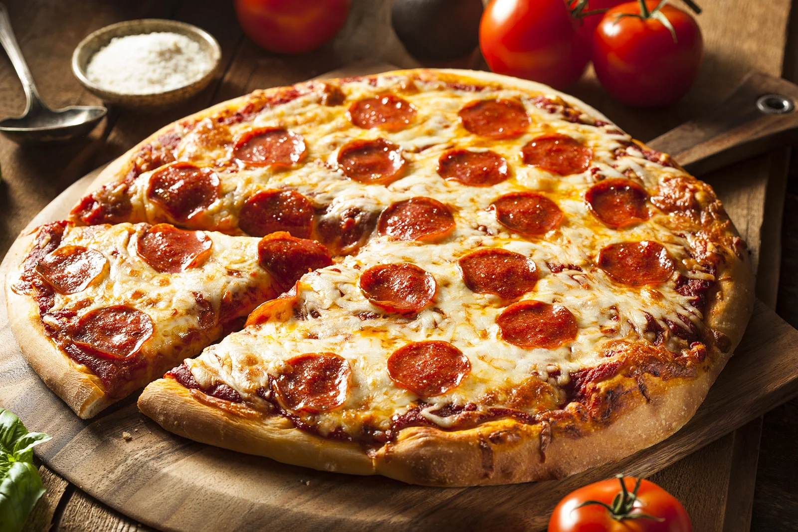

Pizza

Description:
Pizza is a savory Italian dish made from a round, flat base of leavened dough,
baked with a layer of tomato sauce, cheese, and various toppings such as meats,
vegetables, or herbs. It’s usually baked in a hot oven until the crust is crispy
and golden, and the cheese is melted and bubbly.
Ingredients:
For the dough:
- 1 tsp salt
- 1 tsp sugar
- 1 tbsp olive oil
- 1 packet (7g) dry yeast
- ¾ cup (180ml) warm water
For the sauce:
- 200g tomato sauce (or crushed tomatoes)
- 1 tsp olive oil
- 1 tsp oregano or basil
- Salt & pepper to taste
For the toppings:
- 200g mozzarella cheese (grated or sliced)
- Any toppings you like: pepperoni, mushrooms, onions, bell peppers, olives, ham, etc.
Steps:
Make the Dough:
- In a bowl, mix warm water, sugar, and yeast. Let it sit for 5–10 minutes until foamy.
- Add flour, salt, and olive oil. Mix until a dough forms.
- Knead the dough for about 5–7 minutes (smooth and elastic).
- Cover with a towel and let it rise for 1 hour in a warm place (until doubled in size).
Prepare the Sauce:
- In a small pan, heat olive oil.
- Add garlic, cook for 30 seconds.
- Add tomato sauce, herbs, salt, and pepper.
- Simmer for 10 minutes and then cool it down.
Shape the Pizza:
- Preheat oven to 220°C (430°F).
- Punch down the dough and roll it into a circle (about 30 cm).
- Place it on baking paper or a greased pizza tray.
Assemble the Pizza:
- Spread a thin layer of tomato sauce over the dough.
- Add cheese evenly on top.
- Add your favorite toppings.
Bake:
- Bake for 12–15 minutes, until the crust is golden and the cheese is melted and bubbly.
Slice & Enjoy:
- Let it cool slightly, slice it, and enjoy your fresh homemade pizza!
Appendix:
1 tbsp = 15g
1 cup = 340g
Back to the all recipies list